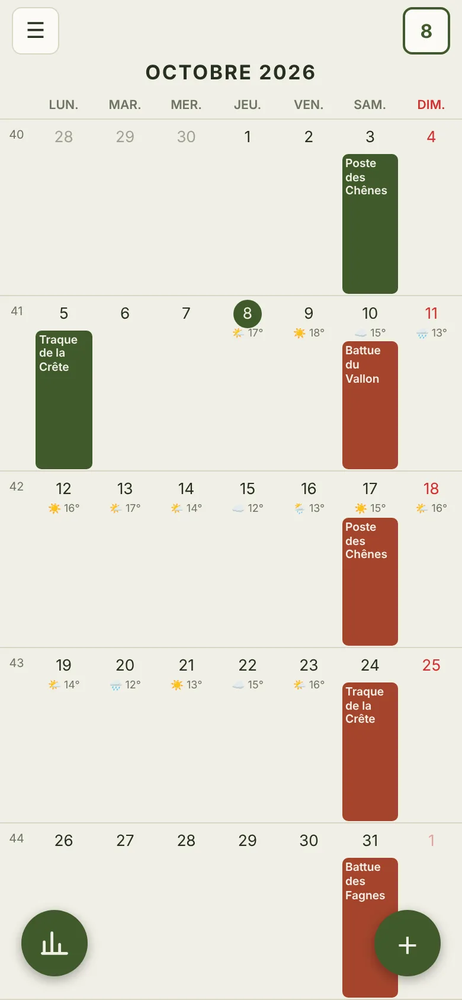
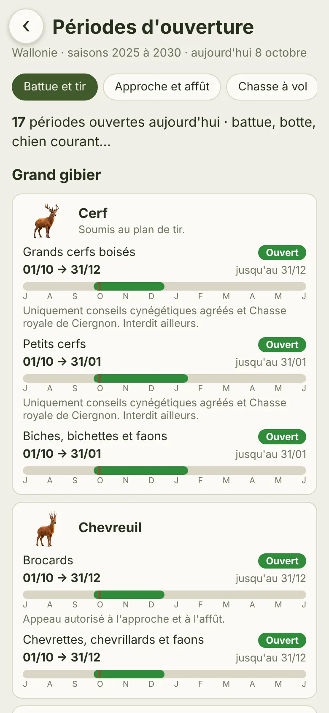
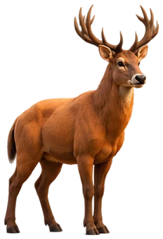
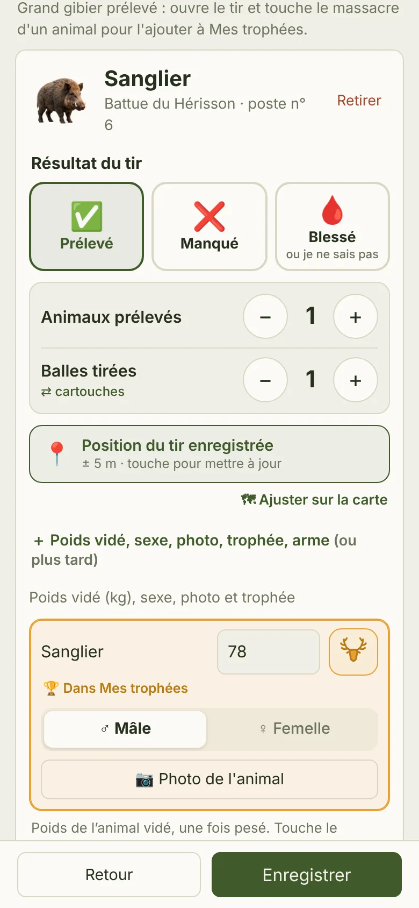
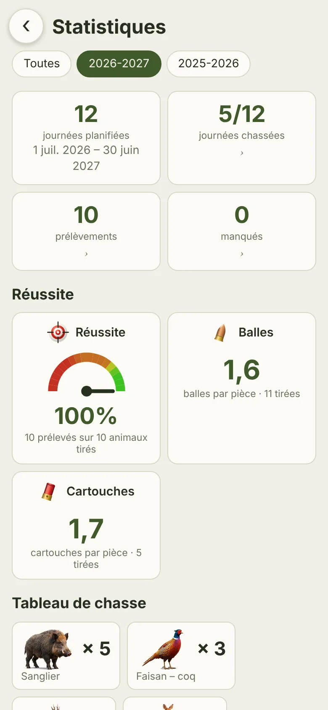
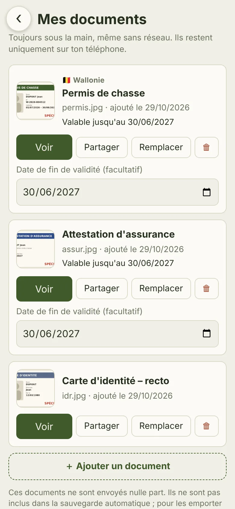

Tes journées, tes tirs, les périodes d'ouverture de ta région et tes documents : tout est au même endroit, même sans réseau au fond du bois.



Pensé sur le terrain, pour être utilisé avec des gants, en quelques secondes.
Tes battues et sorties, importées depuis ton agenda en un geste.
Un bouton au poste : l'heure, la position et l'espèce sont notées, tu complètes plus tard.
Wallonie et France par département, selon ton mode de chasse : ce qui est ouvert aujourd'hui.
Permis, assurance, carte d'identité, permis étrangers : toujours sous la main, hors ligne.
Le temps et la direction du vent pour chaque journée de chasse.
Ta réussite, tes postes, tes saisons, et une image à partager avec ta chasse.

Encoder un tir

Ta saison en chiffres

Tes documents
Bientôt disponible. Pas besoin de store : ChasseLog s'installera depuis le navigateur, comme une vraie application, et arrivera aussi sur Google Play.
Nouveautés, dates d'ouverture, idées de la communauté : rejoins les chasseurs qui font grandir ChasseLog.
Voir la page →ChasseLog est développé bénévolement. Un petit don aide à payer les frais et à ajouter de nouvelles fonctions.
Offrir un café →